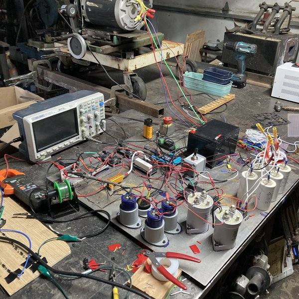
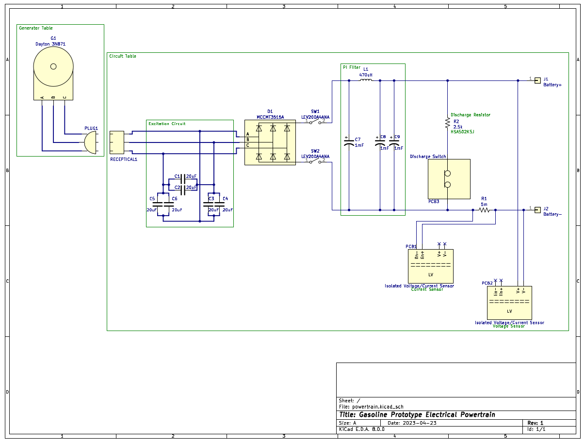
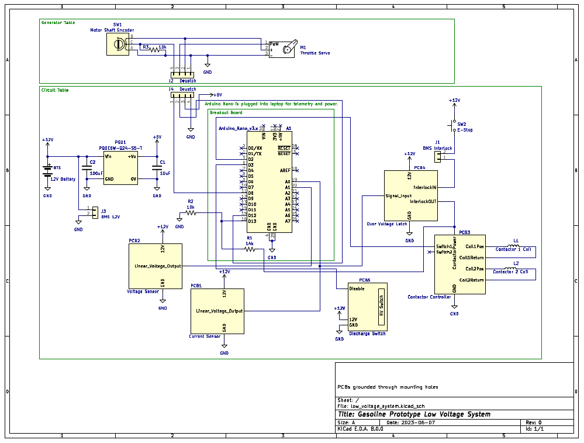

A ~150V battery pack was charged for several minutes with the system, and it appeared to regulate current fairly well. A longer test was not done because the battery pack was not fully protected with BMS (Cowboy Charging). There was not excessive current into the battery pack, but there was some ripple in the current (~0.5A), so the control system did not work perfectly, but it did seem to behave more like a current source than a voltage source. Additionally, the battery pack was made out of reused 18650 cells which may have had a higher than normal series resistance. This may have had an effect on the behavior of the control system.
The powertrain obviously starts with the engine. The engine is a Harbor Freight Preditor Series 212cc 6.5Hp. I suspect that the power rating may actually be lower based on the RPM and torque specs, but the system was only tested to several hundred watts max, so either way it is fine. The shaft of the engine is coupled to the shaft of the generator which is a Dayton 3N871 2Hp Motor. The three phases then go to the electrical powertrain shown below:

Because the generator is actually an induction motor, an excitation circuit is required for it to operate as a stand alone generator. This excitation circuit is the capacitor network shown connected to each incoming phase. The incoming phases then go into a three phase rectifier, which turns the AC voltage into a rectified DC. There is then an LC pi network which has the job of smoothing out this rectified DC. This is all that is needed to generate the DC voltage/current that is needed to charge the batteries. Additionally, for safety, there are isolation contactors, and a discharge circuit to bring the PI network capacitors down to a safe voltage when the system is not in operation. Also, there are voltage and current sensors to provide readings for the control system. These also have isolated low voltage circuitry.

The low voltage system is shown above. It all revolves around the Arduino Nano, which is what facilitates the control system. The user operates the Arduino Nano, and in turn the entire charger, by sending serial commands from a connected computer. A servo motor, under the control of the Arduino Nano, is coupled to the throttle of the generator. This allows for control of the high voltage output, as voltage is proportional to RPM, and the throttle controls engine RPM. The actual control loop reads data from the current sensor (using the ADC), and adjusts the RPM accordingly based on a proportional controller, to try to hold a constant current.
In addition, there is a voltage sensor to terminate charging when the battery pack reaches a certain voltage. There is also an encoder to measure the shaft RPM, this helps facilitate voltage bring up and bring down, and detects when the engine has been turned on. Also shown is an interlock loop that opens the isolation relays given a variety of faults.